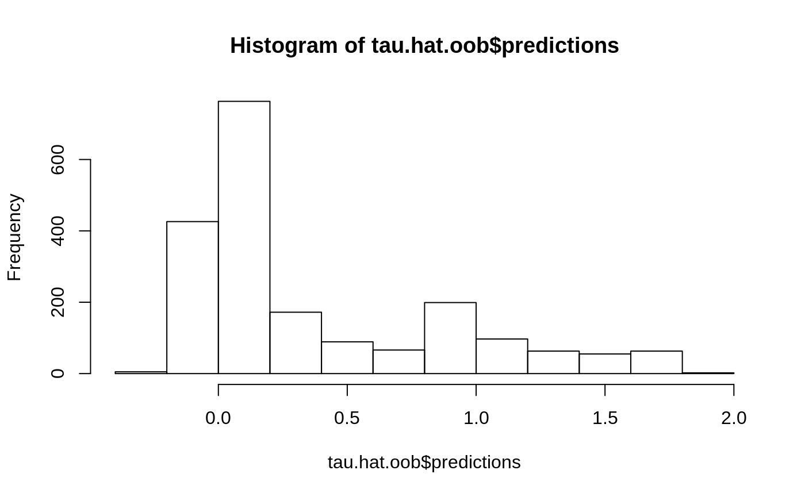
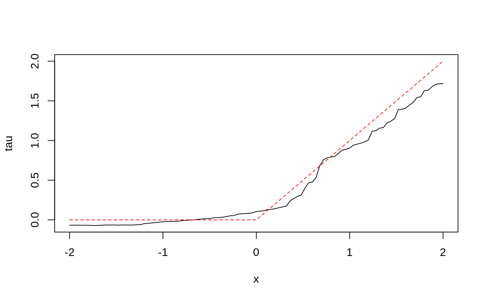
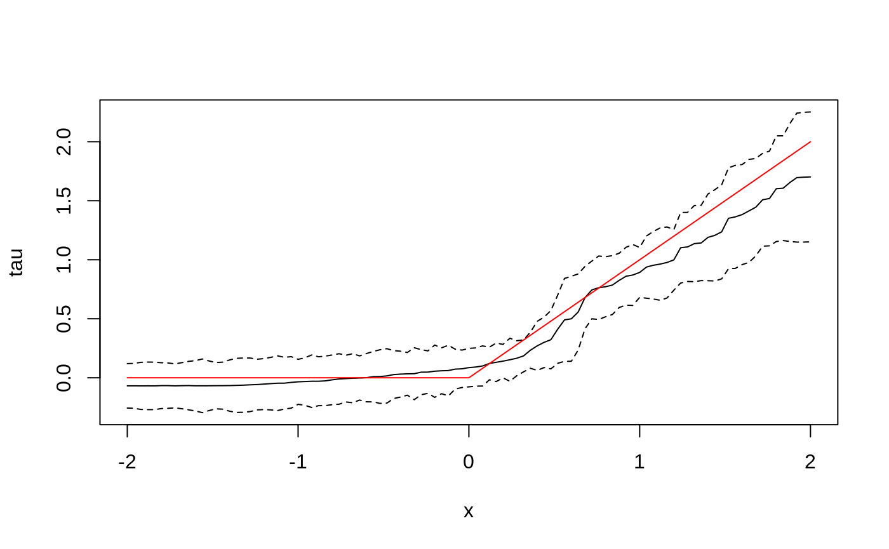

The following example demonstrates how to use GRF for heterogeneous treatment effect estimation. For examples of how to use types of forest, as for quantile regression and causal effect estimation using instrumental variables, please consult the R documentation on the relevant forest methods (quantile_forest, instrumental_forest, etc.).
Generate data and train a causal forest
n <- 2000
p <- 10
X <- matrix(rnorm(n * p), n, p)
X.test <- matrix(0, 101, p)
X.test[, 1] <- seq(-2, 2, length.out = 101)
W <- rbinom(n, 1, 0.4 + 0.2 * (X[, 1] > 0))
Y <- pmax(X[, 1], 0) * W + X[, 2] + pmin(X[, 3], 0) + rnorm(n)
tau.forest <- causal_forest(X, Y, W)
tau.forest
#> GRF forest object of type causal_forest
#> Number of trees: 2000
#> Number of training samples: 2000
#> Variable importance:
#> 1 2 3 4 5 6 7 8 9 10
#> 0.691 0.033 0.041 0.046 0.029 0.029 0.034 0.027 0.033 0.037Estimate treatment effects for the training data using out-of-bag prediction.

Estimate treatment effects for the test sample.
tau.hat <- predict(tau.forest, X.test)
plot(X.test[, 1], tau.hat$predictions, ylim = range(tau.hat$predictions, 0, 2), xlab = "x", ylab = "tau", type = "l")
lines(X.test[, 1], pmax(0, X.test[, 1]), col = 2, lty = 2)
Estimate the conditional average treatment effect on the full sample (CATE).
average_treatment_effect(tau.forest, target.sample = "all")
#> estimate std.err
#> 0.37361071 0.04795468Estimate the conditional average treatment effect on the treated sample (CATT). Here, we don’t expect much difference between the CATE and the CATT, since treatment assignment was randomized.
average_treatment_effect(tau.forest, target.sample = "treated")
#> estimate std.err
#> 0.47136673 0.04853287Add confidence intervals for heterogeneous treatment effects; growing more trees is now recommended.
tau.forest <- causal_forest(X, Y, W, num.trees = 4000)
tau.hat <- predict(tau.forest, X.test, estimate.variance = TRUE)
sigma.hat <- sqrt(tau.hat$variance.estimates)
plot(X.test[, 1], tau.hat$predictions, ylim = range(tau.hat$predictions + 1.96 * sigma.hat, tau.hat$predictions - 1.96 * sigma.hat, 0, 2), xlab = "x", ylab = "tau", type = "l")
lines(X.test[, 1], tau.hat$predictions + 1.96 * sigma.hat, col = 1, lty = 2)
lines(X.test[, 1], tau.hat$predictions - 1.96 * sigma.hat, col = 1, lty = 2)
lines(X.test[, 1], pmax(0, X.test[, 1]), col = 2, lty = 1)
In some examples, pre-fitting models for Y and W separately may be helpful (e.g., if different models use different covariates). In some applications, one may even want to get Y.hat and W.hat using a completely different method (e.g., boosting).
# Generate new data.
n <- 4000
p <- 20
X <- matrix(rnorm(n * p), n, p)
TAU <- 1 / (1 + exp(-X[, 3]))
W <- rbinom(n, 1, 1 / (1 + exp(-X[, 1] - X[, 2])))
Y <- pmax(X[, 2] + X[, 3], 0) + rowMeans(X[, 4:6]) / 2 + W * TAU + rnorm(n)
forest.W <- regression_forest(X, W, tune.parameters = "all")
W.hat <- predict(forest.W)$predictions
forest.Y <- regression_forest(X, Y, tune.parameters = "all")
Y.hat <- predict(forest.Y)$predictions
forest.Y.varimp <- variable_importance(forest.Y)
# Note: Forests may have a hard time when trained on very few variables
# (e.g., ncol(X) = 1, 2, or 3). We recommend not being too aggressive
# in selection.
selected.vars <- which(forest.Y.varimp / mean(forest.Y.varimp) > 0.2)
tau.forest <- causal_forest(X[, selected.vars], Y, W,
W.hat = W.hat, Y.hat = Y.hat,
tune.parameters = "all")Check whether causal forest predictions are well calibrated.
test_calibration(tau.forest)
#>
#> Best linear fit using forest predictions (on held-out data)
#> as well as the mean forest prediction as regressors, along
#> with one-sided heteroskedasticity-robust (HC3) SEs:
#>
#> Estimate Std. Error t value Pr(>t)
#> mean.forest.prediction 0.99714 0.07333 13.5981 < 2.2e-16 ***
#> differential.forest.prediction 0.84097 0.18812 4.4703 4.014e-06 ***
#> ---
#> Signif. codes: 0 '***' 0.001 '**' 0.01 '*' 0.05 '.' 0.1 ' ' 1For more worked examples see the Tutorials section.